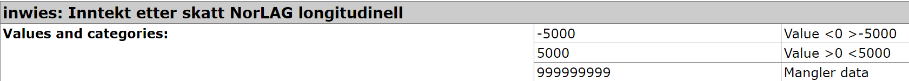

norlag <- read_stata("data/norlag.dta") %>%
unlabelled()Appendix B — Import av data fra Sikt - håndtering av formater med metadata
For de som vil ha en litt mer utfordring kan man lese inn filen i Stata-format. Dette er slik det blir levert fra Sikt1
Stata-formatet dta har to utfordringer når vi importerer til R. Det er tilsvarende problemstilling hvis man importerer fra SPSS eller SAS. For det første er det noen ganger gitt en egen kode for manglende verdi, såkalt “missing”. For det andre lagres informasjonen på en annen måte enn i R. I Stata er ofte kategoriske variable lagret som en numerisk variabel med en tilhørende “label”. Når man leser inn dta-fil til R vil disse variablene være av typen “labelled”. I R er det langt bedre å gjøre de om til factor-variable, men det er litt styr å kode om hvis det er veldig mange variable i datasettet - slik det ofte er i surveydata.
Vi presenterer en samlet løsning først, så tar vi hver del for seg etterpå for å forklare. Nedenforstående kode gjør omtrent følgende:
- Leser inn en dta-fil
- Omkoder alle spesifiserte missing-verdier til NA. Dette gjøres for alle variable i hele datasettet (altså hundrevis av variable)
- Fjerner alle labler som ikke er i bruk (altså: labler for ulike missing-verdier)
- Gjør om alle variable av typen “labelled” til factor-variable
B.0.1 Hvorfor så vanskelig?
Nedenfor vil det vises en god del komplisert kode bare for å få datasettet over i et håndterbart R-format. Mye styr her. Dette gjør at du lett kan få inntrykk av at R er lite egnet til å håndtere slike data når det trengs så mye jobb. Men: Hvis dataene var lagret på en annen måte ville det vært vesentlig enklere. La oss derfor vise hvordan koden ville vært hvis NorLAG var lagret i Stata-format med følgende forutsetninger:
- Ingen rare bruker-definerte missing-verdier
- Alle variable er enten kun kontinuerlig eller kun kategorisk (dvs. ikke noen spesielle verdier på en annen skala, f.eks. missing-verdier)
- Alle data er samlet i én fil
Hvis dataene er konsekvent kodet på denne måten kunne en innlesning se omtrent slik ut:
Første linje importerer dataene. Andre linje gjør om alle variable av typen “labelled” til factor-variable der lablene blir omgjort til “factor-levels”. Dette er da alt som trengs.
Men i den virkelige verden er det sjelden så enkelt. Alle datasett har en del mikk-makk ved seg av både gode og dårlige grunner. Hvordan dataene har blitt til og hvem som har lagt til rette for videre bruk for andre er de to store avgjørende faktorene her.
B.1 Håndtering av user-NAs
For datasettet NorLAG vil det være ulike sett av missing-verdier for de ulike variablene. Dette kan helt fint håndteres manuelt variabel for variabel. Men for å ha ordentlig kontroll på at det blir riktig bør det automatiseres. Logikken i denne delen går et stykke utover hva vi forventer at den jevne sosiologistudent skal lære.
En første sted er å lese inn dokumentasjonsrapporten fra en html-fil slik den leveres fra Sikt og gjør det om til et håndterbart oppslags-datasett. Dette er beskrevet i eget appendix. Det følgende tar utgangspunkt i at en slik oppslagsfil finnes.
Det er noen verdier som i dokumentasjonen er spesifisert som spesielle typer missing. Disse skal vi kode om til NA. Disse verdiene har labler som starter med “filter:” eller “vil ikke svare” etc. Disse danner basis for omkoding til NA. Dette er ikke en komplett liste over koder som innebærer at det egentlig mangler informasjon. (Dvs. fordi koden indikerer grunner til at det mangler informasjon). Etter denne oppryddingen kan det altså fremdeles hende at det dukker opp noe slikt, så vær påpasselig med å sjekke variabelens fordeling før du analyserer med regresjonsmodeller.
Funksjonen nedenfor skal brukes innenfor et steg der man går gjennom alle variablene en om gangen. For hver variabel slås det opp de aktuelle missing-verdiene som gjelder for denne og bruker replace til å omkode til NA for disse verdiene. Når denne funksjonen kalles for hver variabel senere, så brukes det altså ulike definisjoner av missing-verdier for hver variabel.2
B.2 innlesning av data
library(tidyverse)
library(haven)
library(labelled)
# data
faste <- read_stata( "data/NorLAG-lengde-faste.dta", encoding = "utf-8")
lang <- read_stata( "data/NorLAG-lengde-intervju.dta", encoding = "utf-8")
register <- read_stata(paste0(infilbane, "NorLAG-lengde-register.dta"), encoding = "utf-8")Når dataene er er fordelt på flere filer, som i NorLAG, må de slås sammen. Dette gjøres ved å bruke merge()-funksjonen i R. I NorLAG er det en del variable som er i faste og en del som er i intervju. Så er det et eget datasett med variable hentet fra registre. Vi vil ha alle variable i samme datasett.
norlag_lbl1 <- merge(faste, lang, by = c("ref_nr"), all.x = TRUE) %>%
filter(iodeltakelse == 1 |
iodeltakelse == 2 & round %in% c(1, 3) |
iodeltakelse == 3 & round %in% c(2, 3) |
iodeltakelse == 4 & round %in% c(1) |
iodeltakelse == 5 & round %in% c(1, 2) |
iodeltakelse == 6 & round %in% c(2)
) %>%
mutate(year = iointervjuaar)
norlag_lbl <- merge(norlag_lbl1, register, all.x = TRUE, by = c("ref_nr", "year"))I neste steg benyttes katalogen som ble laget tidligere til å omkode alle variable som har spesifikke missing-verdier til NA. Dette gjøres for alle variable i hele datasettet.
# vektorer av variable som skal omkodes
cols_vec_all <- unique(dat_dict$col_nm)
vars <- unique(names(norlag_lbl))
cols_vec <- cols_vec_all[cols_vec_all %in% vars]
cols_vec_na <- cols_vec[(cols_vec %in% unique(dat_dict_na$col_nm))]
norlag <- norlag_lbl %>%
mutate(across(all_of(cols_vec_na),
\(x,dic) recode_col_na(x, .env$dat_dict_na))) %>%
mutate(across(where(is.labelled), ~as_factor(.))) %>%
mutate(across(where(is.factor), ~fct_drop(.)))I tilegg skal vi lage en variabel for det vi kan kalle hovedaktivitet som sysselsettingsstatus. Det er om man er yrkesaktiv, arbeidsledig, student eller annet. I hver runde av NorLAG ble svarkategoriene utformet litt forskjellig, så derfor er svarene fordelt over tre variable. Nedenfor samles disse sammen og kodes om basert på tekststrenger. Dette gjøres noe mer manuelt da det bare gjelder akkurat disse variablene.
## Omkoder hovedaktivitet
fs <- lvls_union( list(norlag$wr001, norlag$wr002, norlag$wr003c)) %>% tolower() %>% unique()
norlag <- norlag %>%
mutate(across(wr001:wr003c, ~factor(tolower(.), levels=fs))) %>%
mutate(hovedaktivitet = case_when(round == 1 ~ wr001,
round == 2 ~ wr002,
round == 3 ~ wr003c) ) %>%
mutate(hovedaktivitet2 = case_when( str_sub(hovedaktivitet, 1, 5) == "yrkes" ~ "Yrkesaktiv",
str_detect(hovedaktivitet, "arbeidsledig") ~ "Trygdet/arbeidsledig/stud/annet",
str_detect(hovedaktivitet, "student") ~ "Trygdet/arbeidsledig/stud/annet",
str_detect(hovedaktivitet, "trygd") ~ "Trygdet/arbeidsledig/stud/annet",
str_detect(hovedaktivitet, "annet") ~ "Trygdet/arbeidsledig/stud/annet",
str_sub(hovedaktivitet,1,6) == "hjemme" ~ "hjemmeværende/husmor",
str_detect(hovedaktivitet, "pensjonist") ~ "pensjonist",
is.na(hovedaktivitet) ~ "Trygdet/arbeidsledig/stud/annet") %>% as_factor())I NorLAG er det en del variable som omhandler inntekt og er beløp i kroner. I NorLAG har de valgt å legge på en label på noen av disse verdiene. Bildet nedenfor viser hvordan variabelen inwies ser ut.

Det er altså to verdier som er spesifisert som “Value <0 >-5000” og “Value >0 <5000”. Dette er altså en måte å spesifisere at verdien er en verdi som ligger innenfor et intervall. Dette skaper problemer fordi det gjør at R tolker disse som factor-variable i stedet for numeriske variable slik de er ment å være.
Det kan virke praktisk å legge slike labler inn i datasettet slik at man lett ser f.eks. at verdien “-5000” faktisk viser til et intervall og ikke den nøyaktige verdien. Men i dette tilfellet står jo dette allerede i dokumentasjonen og i en konkret analyse vil man jo måtte tolke verdien numerisk uansett. Det kan også bemerkes at de numeriske verdiene er avrundet til intervaller på 10.000 slik at det er ganske logisk at det også gjelder for “-5000” og “5000”. Vi velger derfor å omkode disse til numeriske verdier og slette lablene.
Men det er en hel rekke variable som har labler på tilsvarende måte. Alle like hensiktsløst. Vi kan derfor bruke across() for å kode om på samme måte for alle variable samtidig.
Heldigvis ligger disse inntektsvariablene i rekkefølge i datasettet slik at vi kan spesifisere variablene med “fra:til”. Den første variabelen er inarbled og den siste er inwyrkinnt og det kan da skrives som inarbled:inwyrkinnt.
Her er koden som gjør dette:
norlag <- norlag %>%
mutate(across(inarbled:inwyrkinnt,
~ case_when(. == "Value <0 >-5000" ~ -5000,
. == "Value >0 <5000" ~ 5000,
TRUE ~ as.numeric(as.character(.))
)
)
)Og dermed har vi et datasett i et svært så ryddig R-format. Eller i hvert fall det aller meste. Det vil alltid være behov for å gjøre ytterligere omkodinger for en spesifikk analyse, og det kan være andre generelle ting som ikke har blitt tatt hånd om her.
B.3 Hvordan fungerer koden ovenfor?? En intro til mer avansert databehandling
Koden ovenfor er ganske avansert. Det er en del ting som er litt mer avansert enn det vi har gått gjennom tidligere. Vi skal her gå gjennom de viktigste elementene i koden.
B.3.1 across()
across() er en funksjon som brukes for å gjøre noe på tvers av kolonner. Det er en del av dplyr-pakken. Den brukes for å gjøre noe på tvers av kolonner. I koden ovenfor brukes den for å gjøre om alle variable som er inntektsvariable til numeriske variable.
B.3.2 case_when()
case_when() er en funksjon som brukes for å gjøre en rekke sammenligninger og returnere en verdi basert på disse sammenligningene. Den brukes i koden ovenfor for å gjøre om lablene på inntektsvariablene til numeriske verdier.
B.3.3 fra factor til numerisk
I koden ovenfor gjøres det om fra factor til numerisk ved å bruke as.numeric(as.character(.)). Dette er fordi en factor ikke kan gjøres om til numerisk direkte.